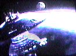

 |
Starbase 23
Located near the Romulan Neutral Zone, Starbase 23 is a stop-over point for ships given the monotonous duty of Zone patrol. The Starbase is separated into two main sections to serve two distinct purposes; the upper structure is an internal drydock for the repair and refueling of passing ships, while the lower section houses administrative and residential quarters for Starfleet personel. The Starbase is infamous for its Engineering section where the crew maintains a makeshift casino and gambling hall nicknamed "the Basement" for fellow off-duty officers sick of deep space duty. Although against regulations, the Starbase administrators turn a blind eye. |